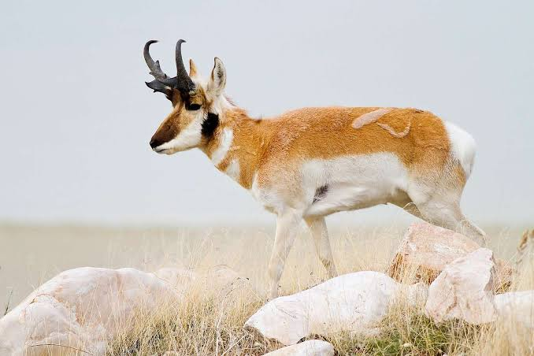
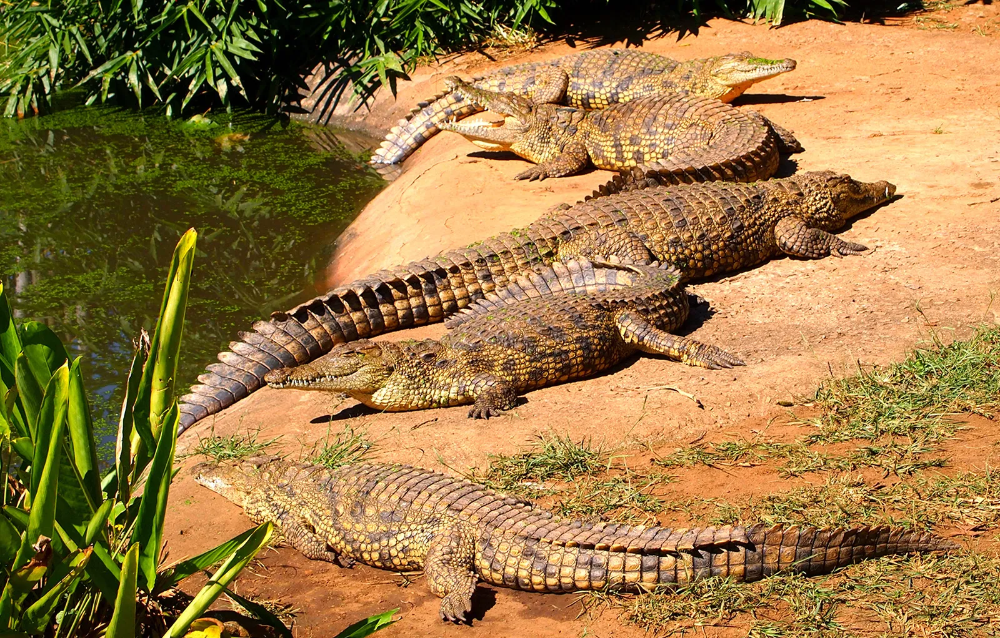
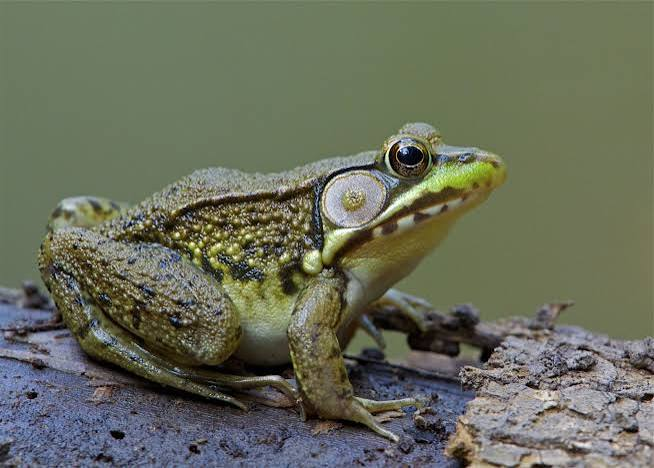
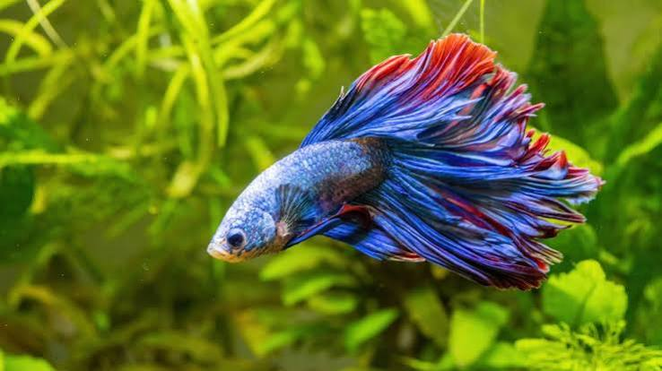

inhabit almost every environment on Earth. They are heterotrophic, meaning they consume
organic material for energy, and most are capable of voluntary movement at some point in
their lives.
1. Vertebrates (Animals with a backbone)
- Mammals: Warm-blooded animals that have hair/fur and nurse their young with milk (e.g., lions, whales, dogs, humans).
- Birds: Warm-blooded, egg-laying creatures covered in feathers, most of whom can fly (e.g., eagles, penguins, parrots).
- Reptiles: Cold-blooded animals with scaly skin that usually lay soft-shelled eggs on land (e.g., snakes, crocodiles, turtles).
- Amphibians: Cold-blooded animals that split their lives between water and land, developing lungs as adults (e.g., frogs, salamanders).
- Fish: Aquatic animals that breathe through gills and possess fins instead of limbs (e.g., sharks, salmon, tuna). \]



